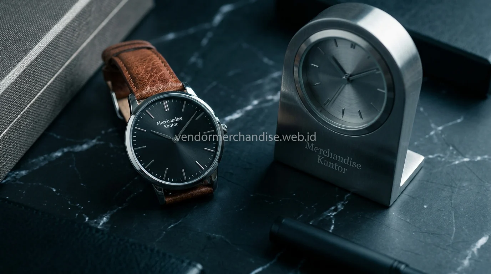

Pulpen dan Alat Tulis Premium sebagai Executive Gift
Pulpen premium menjadi salah satu executive gift klasik yang sering dipilih karena kesan formal dan elegan yang ditampilkannya.
Pilihan produk pada kategori ini meliputi:
- Pulpen metal premium dengan gravir nama atau logo
- Set pulpen dan buku catatan kulit sintetis
- Pulpen dalam kemasan box kayu eksklusif
- Alat tulis premium dengan finishing chrome atau gold
Pulpen premium umumnya dipilih sebagai executive gift untuk momen formal seperti penandatanganan kerja sama atau penghargaan direksi.
Tas Kerja dan Dompet Kulit sebagai Executive Gift
Tas kerja dan dompet kulit termasuk kategori executive gift yang menonjolkan sisi fungsional sekaligus prestise bagi penerimanya.

Rekomendasi produk pada kategori ini:
- Tas kerja kulit sintetis premium untuk direksi
- Dompet kartu nama kulit dengan gravir logo
- Tas laptop eksekutif dengan desain minimalis
- Organizer dokumen kulit untuk kebutuhan meeting formal
Produk berbahan kulit sintetis premium sering dipilih sebagai executive gift karena tampilannya yang lebih formal dibandingkan bahan kanvas standar.
Jam Tangan dan Aksesori Eksklusif untuk Klien VIP
Jam tangan custom dan aksesori eksklusif menjadi pilihan executive gift untuk momen tertentu yang bersifat lebih personal dan berkesan.
Contoh produk yang umum dipesan:
- Jam tangan custom dengan gravir logo perusahaan
- Set aksesori meja kerja eksekutif seperti jam meja dan tempat kartu nama
- Plakat penghargaan dengan material metal premium
- Paket executive set kombinasi pulpen dan jam meja
Produk kategori ini biasanya dipesan dalam jumlah terbatas mengingat harga satuan yang lebih tinggi dibandingkan merchandise reguler.
Cara Memesan Executive Gift Custom untuk Perusahaan Anda
Pemesanan executive gift di Merchandise Kantor melalui proses konsultasi khusus mengingat tingkat kustomisasi dan material yang digunakan lebih detail dibandingkan gift set standar.
Tahapan pemesanan yang umum dilalui:
- Konsultasi kebutuhan dan target penerima executive gift
- Pemilihan material dan desain custom logo
- Proses produksi dengan quality control ketat
- Pengiriman ke alamat kantor atau lokasi acara resmi
Waktu produksi untuk executive gift umumnya membutuhkan penyesuaian lebih detail dibandingkan merchandise reguler, sehingga disarankan memesan lebih awal sebelum acara berlangsung.
"Executive gift premium memberikan impresi prestise dan apresiasi tertinggi yang memperkokoh kemitraan strategis tingkat tinggi."
— Erlang Sinatrya, Penulis Merchandise Kantor

Pesan Executive Gift Premium di Merchandise Kantor
Merchandise Kantor menyediakan pilihan executive gift premium untuk direksi, klien VIP, dan partner bisnis perusahaan Anda. Lihat juga pilihan corporate gift set dan gift set perusahaan untuk kebutuhan gifting korporat lainnya. Hubungi tim Merchandise Kantor sekarang untuk konsultasi produk executive gift sesuai kebutuhan dan anggaran perusahaan Anda di katalog produk merchandise kantor.